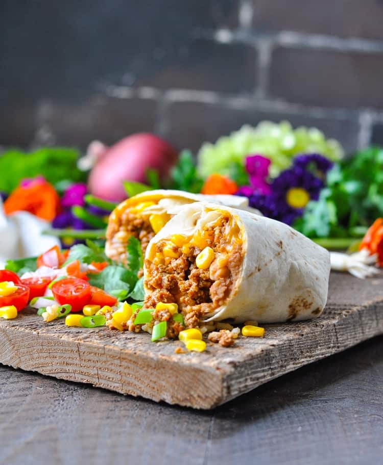
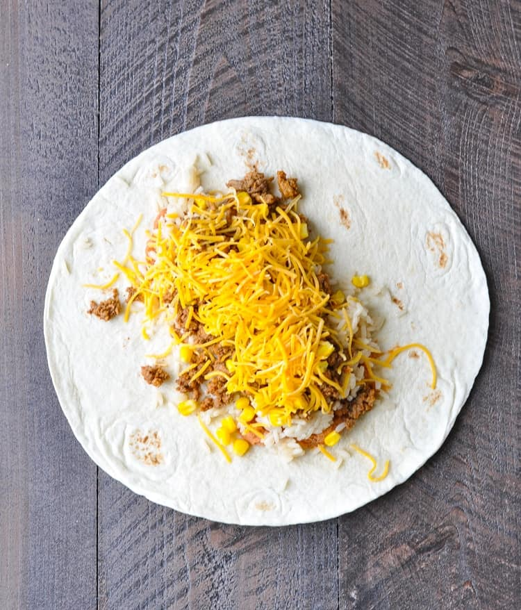
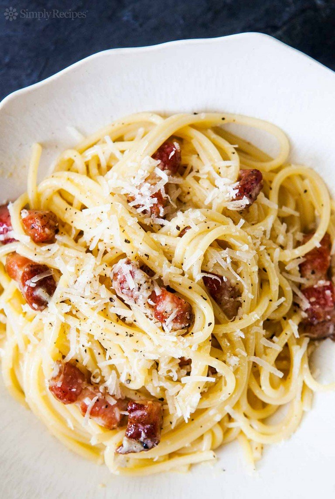

MY FAVORITE DISHES
BURRITO
Ingredients
- 1 lb. lean ground beef
- 1 1 ounce packet taco seasoning mix
- 1 ½ cups refried beans or 1 ½ cups drained and rinsed black beans
- ¾ cup corn kernels
- 3 cups cooked rice I like to use Uncle Ben's microwaveable Ready Rice for a quick option
- 6 large 10-inch flour tortillas (I like to use Mission brand "burrito size" tortillas)
- 1 ½ cups shredded cheddar cheese
- Optional garnish: finely diced red onion; lettuce; diced tomato or salsa; sour cream; fresh cilantro; avocado or guacamole

Instructions
- Preheat oven to 350 degrees F. Spray 9 x 13-inch baking dish with cooking spray and set aside.
- Cook beef with taco seasoning mix, according to seasoning package instructions.
- To prepare 1 burrito: spread ¼ cup beans down center of tortillas; top with ½ cup rice, beef, 2 tablespoons corn, and ¼ cup cheese.
- Fold in opposite sides of each tortilla, then roll up, burrito style. Place, seam-sides down, in prepared dish. Repeat with remaining ingredients to prepare 6 total burritos.
- Cover with foil and bake for 25 minutes (until heated through). If you are baking the burritos from the refrigerator while they’re still cold, it will take about 30-35 minutes for them to heat through.

Recipe Notes
Freeze the burritos in individual servings by wrapping each burrito in aluminum foil before baking. Then just remove one (or more) burritos from the freezer when you’re ready to eat.
To bake individual foil-wrapped burritos straight from the freezer (while still frozen): Place foil-wrapped burrito on a baking sheet and bake at 350 degrees for 45-55 minutes.

Spaghetti Pasta Carbonara

Notes
This recipe uses raw eggs, which are essentially cooked by tossing with hot pasta. They are not cooked to the point of scrambled though, just enough to thicken the eggs into a sauce.
The garlic is optional. It is not usually included in pasta carbonara, but it tastes great so we've included it. By the way, "guanciale", or pork jowl, is traditionally used in this dish, so if you can get it, by all means use it.
Ingredients
- 1 tablespoon extra virgin olive oil or unsalted butter
- 1/2 pound pancetta or thick cut bacon, diced
- 1-2 garlic cloves, minced, about 1 teaspoon (optional)
- 3-4 whole eggs
- 1 cup grated parmesan or pecorino cheese
- 1 pound spaghetti pasta (or bucatini or fettuccine)
- Salt and black pepper to taste
Method
- Heat pasta water: Put a large pot of salted water on to boil (1 Tbsp salt for every 2 quarts of water.)
- Sauté pancetta/bacon and garlic: While the water is coming to a boil, heat the olive oil in a large sauté pan over medium heat. Add the bacon or pancetta and cook slowly until crispy.
Add the garlic (if using) and cook another minute, then turn off the heat and put the pancetta and garlic into a large bowl.
- Beat eggs and half of the cheese: In a small bowl, beat the eggs and mix in about half of the cheese.
- Cook pasta:Once the water has reached a rolling boil, add the dry pasta, and cook, uncovered, at a rolling boil.
- Toss pasta with pancetta/bacon:


- When the pasta is al dente (still a little firm, not mushy), use tongs to move it to the bowl with the bacon and garlic. Let it be dripping wet. Reserve some of the pasta water.
- Move the pasta from the pot to the bowl quickly, as you want the pasta to be hot. It's the heat of the pasta that will heat the eggs sufficiently to create a creamy sauce.
- Toss everything to combine, allowing the pasta to cool just enough so that it doesn't make the eggs curdle when you mix them in. (That's the tricky part.)